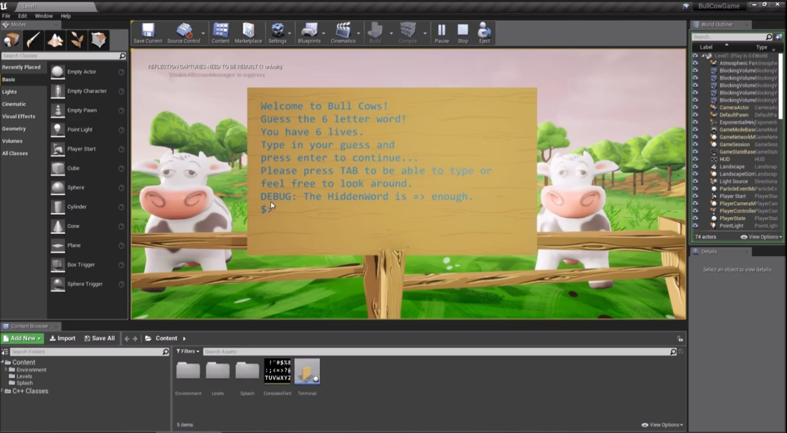
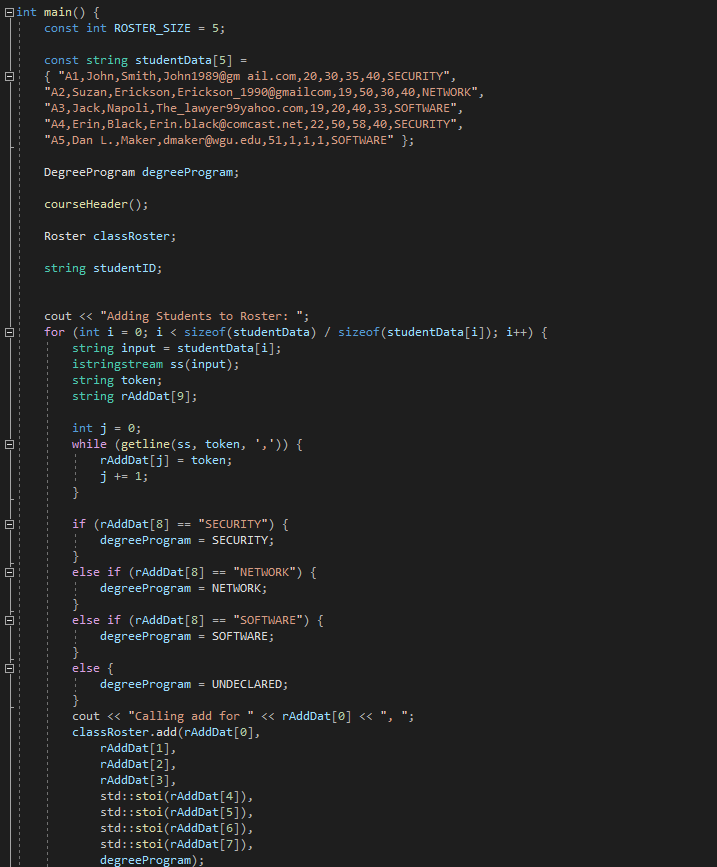
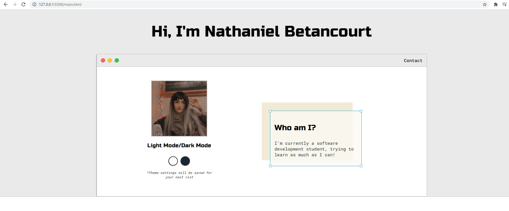

Bulls & Cows
A word guessing game made in C++ incorporated with Unreal Engine
Technologies:
- - C++
- - Unreal Engine
Student Roster Project

A small program that reads through a student list and uses function calls to manipulate data, and creates student objects while parsing through the data.
Technologies:
- - C++
This website!

This website was made from scratch. Using what I learned from my university, I decided it be better to make my portfolio website instead of using a website with presets like Wix or WordPress.
- - HTML/CSS
- - Javascript